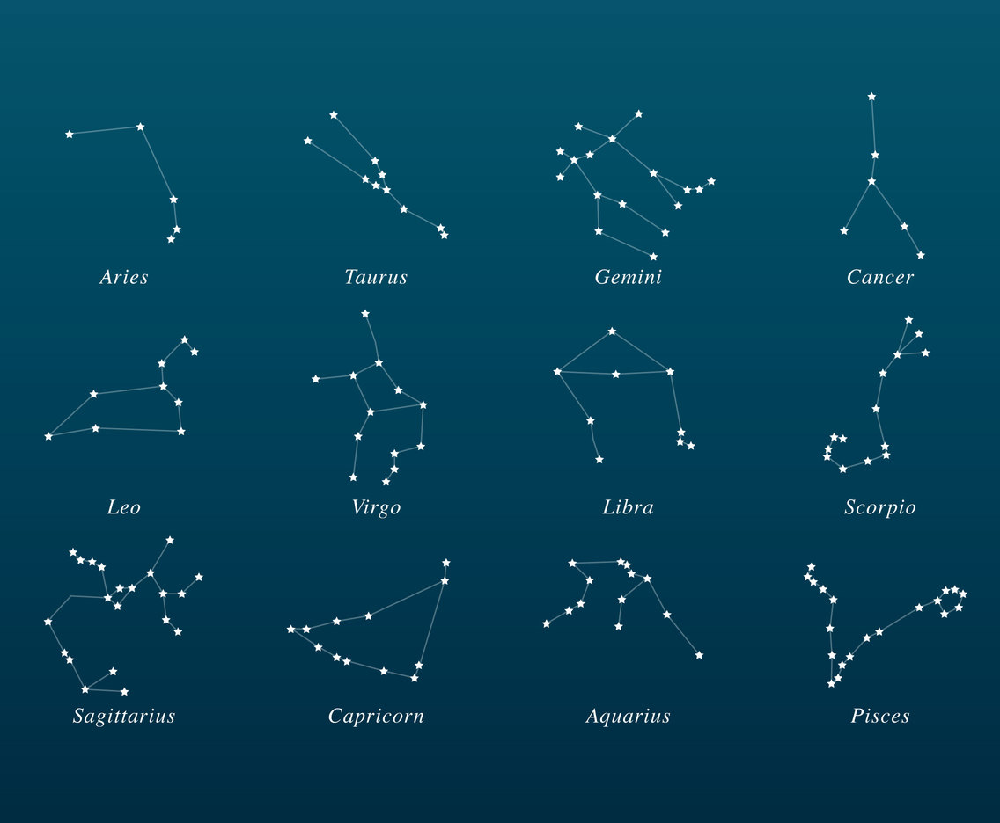

What make constellations special are the stories humans create for them!
One of the most popular traditions surrounding astrology are Zodiacs. Zodiacs are constellations that follows the sun’s apparent path, the ecliptic. It is said that when you are born, the position in which the sun, moon, planets, and stars lie affects your person. Although not backed up by science, many people to this day believe it to be the case!
Below are the groups of stars and what they look like
Image: (“Zodiac Constellations”)
Ophiuchus is like the Pluto of the Zodiacs. It was omitted because the traditional zodiac divides the sky into 12
equal 30-degree
segments, and adding a 13th sign would disrupt this symmetrical 360-degree system. :(